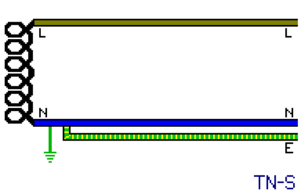
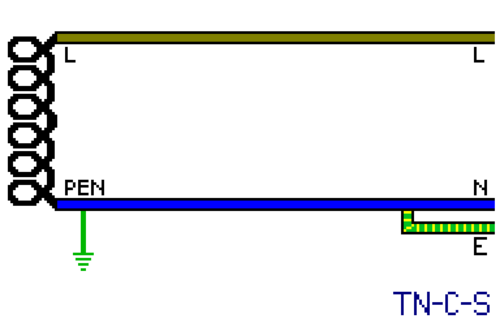
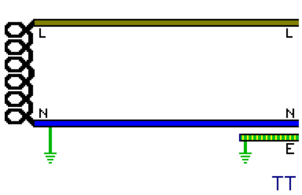

Earthing systems
As mentioned previously, the protective earth (ground) is a crucial safety feature in an electrical installation, and is thus mandatory in most countries around the world. While this connection can have several purposes, its principal one is to ensure that the chassis of metal-cased appliances always has a return path back to the transformer so that, if a live wire comes in contact with it during a fault, current will flow and cause an automatic disconnection device (such as a breaker) to trip and turn off the power.
However, despite having a seemingly simple goal, there are several different ways in which an earthing system can be set up, sometimes even within the same country, with each one having its own set of pros and cons.
Classification of these different types of systems is done using terminology set by the International Electrotechnical Commission (IEC) and divided into three general categories: TN, TT and IT. TN supplies (that is, ones where the neutral is physically connected to the earth conductor at some point) are subsequently divided into subcategories to specify the point at which this connection is made.
In all of these these systems, aside from the rather uncommon IT ones, the central point of the transformer is connected to an earth electrode, often at multiple locations across the network to combat against voltage drop. This becomes the neutral (N), or zero, of the supply, as it's at approximately 0V with respect to earth.
It's precisely because of this connection that touching a live wire causes an electric shock, since the physical earth forms a path between two points of the transformer that otherwise wouldn't exist. In cases where this risk is deemed unacceptable, isolated supplies may be used, though with noteworthy disadvantages.
TN-S
In these supplies the earth is provided by the electricity supplier in the form of a separate wire going all the way back to the transformer, where it is connected to the neutral. This system used to be common in the UK until the 70s-80s, where supply cables had a lead outer covering which was used as the protective earth (PE) conductor.
The disadvantage of this system is its high cost, as an entirely separate wire must be used just for the earth along the entire lenght of the distribution lines; however it's also very safe, as there's not much that can go wrong with it.
Nowdays, it's often found on installations (such as commercial or industrial ones) with their own transformer, as the cost of the additional conductor needed is minimal.
{kind=link}
TN-C
With this system a combined neutral and earth conductor (PEN) is used, serving both the roles of carrying the return current and for the protective earth connection. In a real installation this means either using an appliance with a connection from the neutral to the chassis - necessitating a polarised plug - or, more commonly, having a link behind the socket to bridge the neutral and earth terminals together (in North American terms this is generally referred to as a "bootleg ground").
The only advantage of this arrangement is in its very low cost, since no extra wires are needed to add earthing to a circuit. However, there's a significant risk present if the PEN wire becomes broken at any point (even just due to a poor connection) - a situation known as a PEN fault.
In this case the neutral wire will rise up to mains voltage, or close to it; this is possible under any supply system, of course, but it's particularly dangerous with TN-C ones since the earth is directly connected to the now-hazardous neutral, leading to any connected metal-cased appliance to become live at a dangerous voltage.
{kind=link}
These days this supply type is seldom used outside of power distribution, due to this huge safety risk. However, it was common until the 70s in German-speaking countries using the "bootleg ground" method, a practice referred to as "classical zeroing" (Klassiche Nullung in German). In the US, TN-C earthing was allowed until the 90s for connecting stoves and dryers, using a "3-wire" (2 phases + PEN) power cord, replacements for which are still readily available.
TN-C-S
In this system the power distribution side is still TN-C, and thus there's still a combined protective earth and neutral (PEN) wire. However, it's then split off into separate neutral and earth conductors at a certain point, usually after entering the building, which then never recombine.
The location where the split happens varies depending on the country: in Europe it's inside the supply company's cutout (a special type of fuse holder), in North America it's inside the first point of disconnection (typically the breaker panel) using a "bonding screw", while in some other places it may be inside the meter socket [example].
As the supply side is still TN-C, PEN faults are still a concern: a fallen tree hitting a power line or even just poor maintenance of the infrastructure can pose a serious threat. This is especially true with electrical equipment operated outdoors, where a person is in contact with the "real" earth. To help alleviate these risks, a few measures can be taken: for example, a concentric cable may be used, which makes it difficult to cut the combined neutral and earth connection without also disconnecting the phase(s).
The PEN is usually also earthed at multiple points, which may help reduce its voltage in case of a possible PEN fault. The exact implementation of this varies between countries; one solution is to connect earth rods at regular intervals on the distribution lines. Many countries (the UK being a notable exception) also make it mandatory to install earth rods inside the installation.
Essentially, TN-C-S supplies are an improvement over TN-C ones, maintaining most of the cost advantage (at least on the distribution side) while helping to lessen (though not eliminate entirely) its considerable safety risks. Because of this, it's become widespread throughout the world, especially in Europe (though not in every country) and in North America, where it's the only type in use.
TT
On TT supplies, the neutral and earth conductors are always kept separate - the earth connection is provided purely by a local electrode. This means that a short between line and neutral would have a fairly low fault current, as it'd have to pass through the physical soil in order to go back to the transformer.
Such an arrangement used to be undesirable before the advent of RCDs, as the low current produced during a fault wouldn't be enough to cause a fuse or circuit breaker to trip immediately, leaving the faulty appliance powered on and energised.
However, thanks to RCDs having become a lot cheaper over time, and nowadays being necessary for most household circuits anyways, regardless of the earthing system in use, the TT system has become much more appealing, as it's as cheap as TN-C-S without suffering from the risk of PEN faults.
This system is standard in Denmark, France, Italy, Japan. Additionally, several other countries that normally tend to use the TN system, such as the UK and Australia, make use of it in rural installations, likely due to the distribution lines not being reliable enough for TN-C-S earthing, and TN-S being prohibitively expensive over long distances.
{kind=link}
IT (isolated supplies)
On isolated supplies none of the connections on the transformer are connected to earth at any point, which leads to a lack of a true "line" or "neutral", as under normal circumstances it's impossible to receive an electric shock from touching only one wire.
This system is usually found on small generators meant for powering few devices. Larger generators tend to be set up as TN-S and require connecting to an earth rod. They're also used in some special situations, such as hospitals, as a power continuity measure for machines that can't suffer from a power loss. In case of a fault to earth the system essentially turns into a TN system, and a special monitoring device can alert the operator.
IT supplies are also very common in Norway, generally on a 127/220V three-phase transformer. This was traditionally considered safer, but an isolated system has the problem of being nearly impossible to keep isolated on a large scale. Additionally, some devices (such as EVSEs) don't work properly with them; this has lead Norway to slowly migrate over to 230/400V TN-C-S supplies like other European countries.